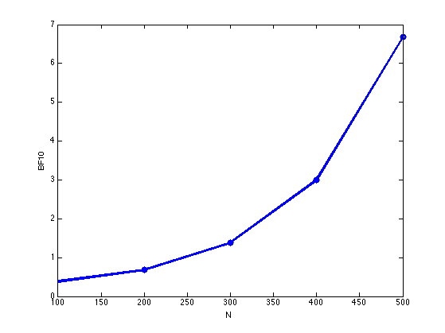

Bayes factor for handedness/ gender data
clear all
sfs = [1 2 3 4 5];
Nsf = length(sfs); BF10vsN = zeros(1,Nsf);
for i=1:Nsf
sf = sfs(i);
y1 = 9*sf; n1 = 52*sf; y2 = 4*sf; n2 = 48*sf;
N(i) = n1+n2;
alphas = [1 1];
logZ = betaln(alphas(1), alphas(2));
logmarglik0 = ...
betaln(alphas(1)+y1+y2, alphas(2)+(n1+n2-y1-y2)) -logZ;
logmarglik1 = ...
betaln(alphas(1)+y1, alphas(2)+(n1-y1)) -logZ ...
+ betaln(alphas(1)+y2, alphas(2)+(n2-y2)) -logZ;
BF10vsN(i) = exp(logmarglik1 - logmarglik0);
warning off
BF10(i) = (nchoosek(n1+n2,y1+y2)*(n1+n2+1)) / ...
(nchoosek(n1,y1)*nchoosek(n2,y2)*(n1+1)*(n2+1));
warning on
end
BF10vsN
BF10
postNull = 1./(1+BF10vsN)
if 1
figure; plot(N, BF10vsN, 'o-', 'linewidth', 3);
xlabel('N'); ylabel('BF10')
printPmtkFigure('BFhandedness')
end
BF10vsN =
Columns 1 through 4
0.3863 0.6822 1.3886 2.9964
Column 5
6.6767
BF10 =
Columns 1 through 4
0.3863 0.6822 1.3886 2.9964
Column 5
6.6767
postNull =
Columns 1 through 4
0.7213 0.5945 0.4187 0.2502
Column 5
0.1303
